第1回：Claude Code の基本（バックオフィス向け）
「目標：Claude Code の基本操作を理解し、日常業務で利用できるようになる」
1到達目標・時間配分
到達目標
- Claude Desktop で Claude Code を起動し、作業フォルダを開いて使い始められる
- 画面の操作（モデル・承認モード・使用量）と特殊プレフィックス（
@!）を使える - Web 記事の調査 → 日本語の資料化 → デザイン調整 → PDF 化までの一連を Claude Code に任せられる
時間配分（90分）
| # | 内容（約1.5時間・手を動かしながら進めます） | 時間 |
|---|---|---|
| 1 | オープニング | 2分 |
| 2 | Claude Code とは？ | 12分 |
| 3 | 基本的な使い方 | 18分 |
| 4 | Claude Code の設定ファイル | 4分 |
| 5 | 操作の体系 | 10分 |
| 6 | 実践：Web 記事をプレゼン資料にする | 25分 |
| 7 | まとめ | 4分 |
| 8 | 質疑応答 | 15分 |
2Claude Code とは？（12分）
2-1. Claude Code（3分）
- Anthropic が提供する エージェント型コーディングツール
- CLI（ターミナル）/ VS Code / JetBrains / Claude Desktop / Web (
claude.ai/code) の 5つの入口 がある - 本コースでは Claude Desktop（デスクトップアプリ） を中心に扱う
2-2. チャットとの違い（2分）
| 観点 | Claude チャット | Claude Code（AIエージェント） |
|---|---|---|
| ファイルアクセス | コピペで渡した範囲のみ | ローカルファイルに直接アクセス |
| 実行 | テキスト返答のみ | ファイル編集・コマンド実行を自分で行う |
| ループ | 人間が結果を貼り戻す | 自分でエラーを読み、自分で直す |
| 必要な仕組み | ─ | 承認モデル（ハーネス） |
2-3. AIエージェントの動き（4分）
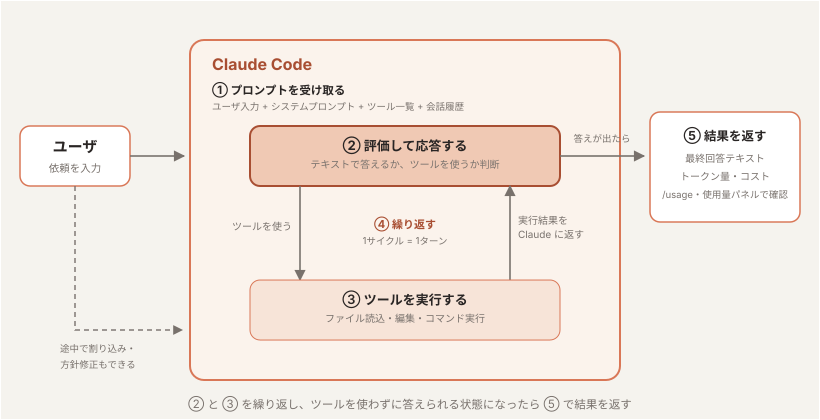
- プロンプトを受け取る。 ユーザの入力に加えて、Claude Code が用意する指示（システムプロンプト）・使えるツールの一覧・これまでの会話履歴をまとめて受け取る。
- 評価して応答する。 Claude が今の状況を見て、どう進めるか決める。テキストで答える／ツールを使う（ファイル読込・編集・コマンド実行など）／その両方、のいずれか。
- ツールを実行する。 要求されたツールを実行し、結果を Claude に返す。この結果が次の判断材料になる。Hooks を使えば、ツールの実行を 実行前に止めたり書き換えたり できる（第2回）。
- 繰り返す。 ステップ 2 と 3 を繰り返す。この 1 サイクルが 1 ターン。ツールを使わずに答えだけ返せる状態になるまで続く。
- 結果を返す。 最終的な回答テキストを返し、その作業で使った トークン量・コスト も確認できる（使用量パネルや
/usageで見られる）。
2-4. 用語説明（3分）
セッション
- 1つの依頼を始めてから終えるまでの 1つの対話単位。会話履歴（コンテキスト）はセッションごとに保持される
- 終了しても履歴は残っており、サイドバーの一覧から選んで再開できる（3-2）
- セッションが変わるとコンテキストはまっさらになる — 1タスク1セッション が使い方の基本

モデル
ここでは Large Language Model (LLM) を指す。Anthropic 社が提供するモデルファミリー：
| モデル | 特徴 |
|---|---|
| Fable | 最上位。最も難しい推論・長時間の自律的なエージェント作業向け |
| Opus | 高性能。込み入った判断や、大量のファイルをまとめて扱う作業向け |
| Sonnet | 性能と速度のバランス型。日常的な作業の主力 |
| Haiku | 最速・低コスト。簡単な質問や定型作業向け |
コンテキスト
- 会話・ファイル内容・コマンド出力すべてが コンテキストウィンドウ に積まれる
- 同じセッションで会話を続けていくと コンテキストウィンドウを消費していく
- 上限に近づくと 自動コンパクション（要約圧縮）が走る — 情報のロスを伴う

トークン
- LLM が文章を処理する 最小単位（英語は約4文字 ≒ 1トークン、日本語は1〜2文字 ≒ 1トークン）
- コンテキストウィンドウの上限はトークン数で決まる（例：200K トークン）
- 利用量（レートリミット）も入出力のトークン数で計算される —
/usageで確認できるのはこれ

参考: トークン分割を体験できるツール（OpenAI Tokenizer） — platform.openai.com/tokenizer
ハーネス
- モデル（LLM）を実用的なエージェントとして動かすための 周辺機構の総称
- ツール実行・パーミッション管理・コンテキスト管理（コンパクション）・セッション管理などを担う
- Claude Code = モデル + ハーネス。同じモデルでもハーネスの出来でエージェントの性能は大きく変わる

パーミッション
- ツール実行（ファイル編集・コマンド実行など）の前に ユーザの承認を求める 仕組み。ハーネスの安全機構
- 読み取り系は確認なしで実行され、書き込みやコマンド実行は承認が必要（「手動」モードの場合）
- 確認の度合いは承認モード（3-4）で切り替えられ、settings.json の
permissions（4-2）で事前にルール化もできる
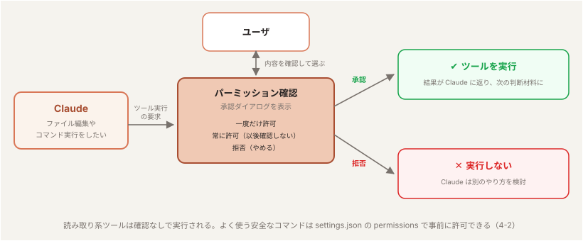
3基本的な使い方（18分）
3-1. インストール（2分）
公式サイトからインストーラをダウンロードしてインストールする。コマンド操作は不要。
- claude.com/ja/download を開く
- macOS / Windows それぞれのインストーラが用意されているので、自分の環境に合うものをダウンロードする
- ダウンロードしたファイルを実行し、画面の指示に従ってインストールする
動作確認
インストールが済んだらアプリを起動する。以下のホーム画面が表示されれば成功。起動直後は チャットモード になっている。

左上の </> アイコンをクリックすると Claude Code の画面 に切り替わる。本コースではこちらを使う。
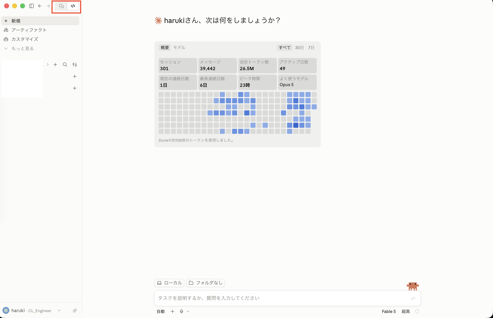
作業フォルダを開く
Claude Code は「どのフォルダで作業するか」を決めてから使う。入力欄の上にあるフォルダのボタンをクリックすると、最近使ったフォルダの一覧と 「フォルダを開く…」 が表示される。
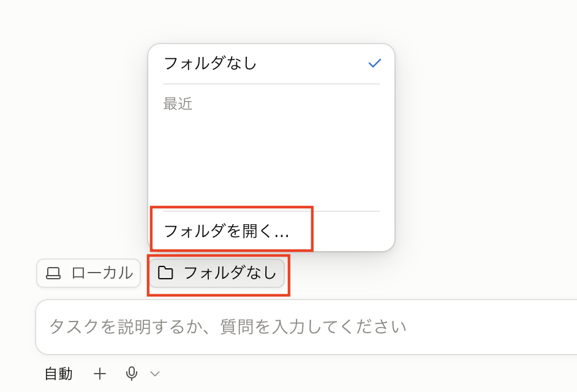
「フォルダを開く…」を選ぶと、ファイル選択のダイアログが開く。作業したいフォルダを選んで 「開く」。

初めて開くフォルダの場合、そのワークスペースを信頼するか の確認が表示される。
- Claude Code は開いたフォルダ配下を 読み取り・編集・コマンド実行 できる。そのために起動時にユーザへ確認を行う（ハーネス機能）
- 自分が作った／信頼できるフォルダ（自分の資料・チームの成果物など）なら
ワークスペースを信頼 - 心当たりのないフォルダなら、中身を確認するまでは
キャンセルで抜ける

信頼すると作業フォルダが設定され、入力欄の上に 選択したフォルダ名（例: handson）が表示される。以降の依頼は、このフォルダを基準に実行される。

3-2. セッションの開始・再開（2分）
セッション（2-4）は、1つの依頼を始めてから終えるまでの対話単位。新しく始めるのも、前の続きを開くのも、左のサイドバーから行う。
開始
サイドバー上部の + 新規 で新しいセッションを始める。コンテキストがまっさらな状態からのスタートになる。

再開
サイドバーには 作業フォルダごと にセッションの一覧が表示される。開きたいセッションをクリックすると、そのときの会話（コンテキスト）を引き継いだ状態で再開する。終了しても履歴は残るので、「昨日の続きをやる」がそのままできる。
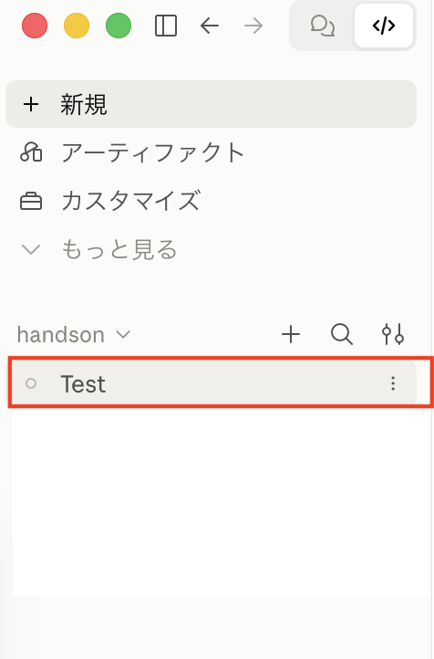
3-3. 画面の見方と設定（11分）
アプリでは、状態の確認も設定の変更もほとんど画面上の操作で行える。よく使うものを順に見ていく。
設定画面
サイドバー左下のアカウント名をクリックすると、設定画面を開ける。
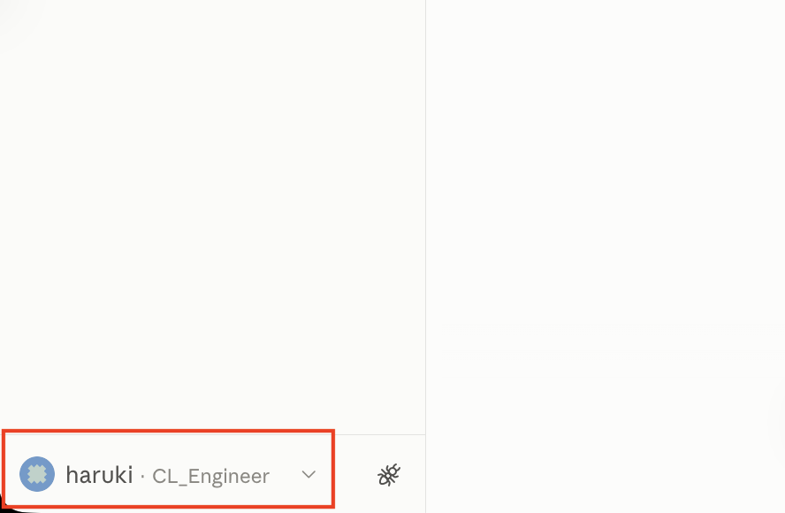
設定画面には アカウント・プライバシー・使用量・メモリー・Claude Code などの項目が並ぶ。全体の設定はここで確認・変更する。

使用量を確認する
入力欄の右下のアイコンをクリックすると 使用量パネル が開く。コンテキストウィンドウの残り（2-4）と、5時間ごと・週ごとの利用枠の消化状況が一目でわかる。

パネル下部の 詳細な内訳を見る を押すと、設定画面の「使用量」に移動し、リセット時刻まで含めた全体像を確認できる。
さらに詳しく見たいときは /usage コマンドを使う。セッション開始後（プロンプトを1回でも送ったあと）に実行すると、そのセッションのコスト・トークンの内訳まで表示される。
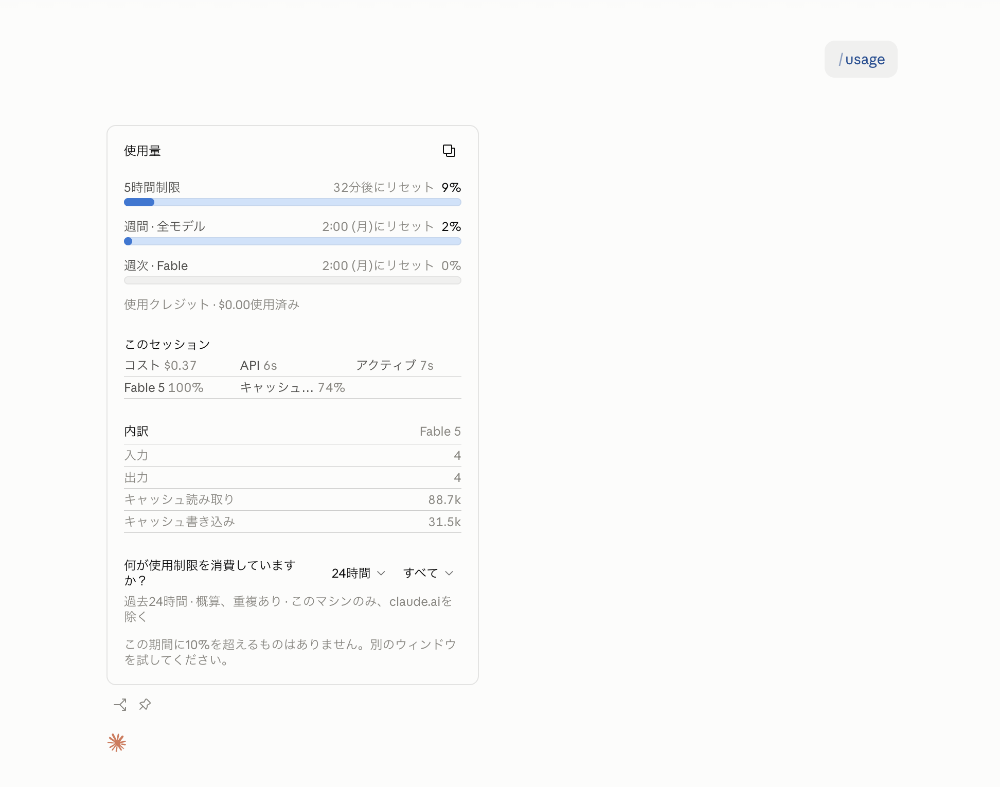
/usage を実行すると
プロンプトをまだ1度も送っていない状態で実行すると、コマンドの結果ではなく 設定画面の「使用量」 が開く。セッション単位の内訳を見たいときは、何か1つ依頼したあとに実行する。
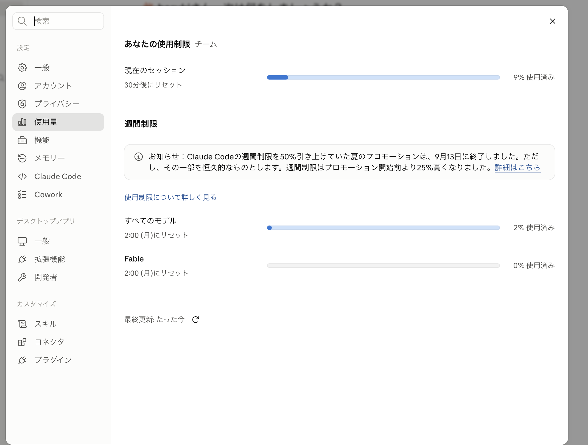
モデルを切り替える
入力欄の右下に モデル名 が表示されている。クリックすると一覧から切り替えられる。それぞれの特徴は 2-4 の表を参照。

思考の深さ（エフォート）を変える
モデル名の隣が 思考の深さ。「高速」〜「高精度」のスライダーで調整する。じっくり考えさせたいときは高精度側、軽い質問なら高速側に寄せる。深くするほど時間とトークンを使う。

3-1 で開いた作業フォルダで、自分の環境を確認・整備してみましょう。
- 使用量パネルを開いて、今の利用枠の残りを確認する
- 設定画面の「プライバシー」を開いて、学習データの設定を確認する
- モデルとエフォートのパネルを開いてみる（変更してもよい）
- 何か1つ依頼したあと
/usageを実行して、このセッションの内訳を見る
3-4. 承認モード（3分）
入力欄の左下に現在のモードが表示されている。クリックすると一覧から切り替えられる。

| モード | 挙動 |
|---|---|
| 自動 | バックグラウンドの安全チェック付きで、権限の判断を Claude に任せる（危険な操作のみ確認に切り替わる）。既定のモード |
| 手動 | 変更を加える前に毎回確認する。各ツールの初回使用時に承認を求める |
| 編集を受け入れる | ファイル編集は自動承認、それ以外のコマンドは承認を求める |
| プラン | 読み取り専用。変更を加えず、計画だけを立てる |
| 権限をバイパス | すべての権限を承認し、確認を一切しない |
使い分けの目安
- ふだんの作業 → 自動（既定）
- 何が実行されるか一つずつ確かめたい → 手動
- 下調べ・計画だけしてほしい → プラン（ファイルを変更しない）
- 入力欄左下のモード表示をクリックして、自動・手動・プラン を切り替えてみましょう。切り替えたあと、表示がどう変わるか確認します。
4Claude Code の設定ファイル（4分）
Claude Code の挙動は、階層化された設定ファイルで制御される。「どこに置くか」でスコープが変わるのがポイント。
4-1. CLAUDE.md — プロジェクトメモリ（3分）
セッション開始時に 自動で読み込まれる「Claude への指示書」。毎回同じことを指示せずに済むよう、守ってほしいルールをここに書いておく。追記したいときは「CLAUDE.md に〜を追記して」と頼めばよい。
| 配置場所 | スコープ |
|---|---|
~/.claude/CLAUDE.md | 全フォルダ共通（個人の指示） |
<作業フォルダ>/CLAUDE.md | そのフォルダ共通（チームで共有） |
<作業フォルダ>/CLAUDE.local.md | そのフォルダの個人用（共有しない） |
/init — 雛形を生成する
入力欄に / を打つとコマンドの一覧が出る（体系は5章）。そのうちの /init を実行すると、作業フォルダの中身を調べて CLAUDE.md の雛形を作ってくれる。

3-1 で開いた作業フォルダで /init を実行し、生成された CLAUDE.md にどんな内容が書かれたか眺めてみましょう。
4-2. settings.json（1分）
設定ファイルは CLAUDE.md だけではない。settings.json は、承認の許可リストや Hooks など ハーネスの動作設定 を JSON で定義するファイル。CLAUDE.md が「Claude への指示」なのに対し、こちらは「仕組みの設定」を受け持つ。
| 配置場所 | スコープ |
|---|---|
~/.claude/settings.json | 全フォルダ共通（個人の設定） |
<作業フォルダ>/.claude/settings.json | そのフォルダ共通（チームで共有） |
<作業フォルダ>/.claude/settings.local.json | そのフォルダの個人用（共有しない） |
5操作の体系（10分）
5-1. 3種類の操作（2分）
| 種類 | 入り方 | 例 |
|---|---|---|
| スラッシュコマンド | 入力欄で / を入力 | /init, /usage |
| 特殊プレフィックス | プロンプト先頭で @, ! | @議事録.md, !ls |
| 画面の操作 | クリック | 承認モードの切り替え（3-4）、メッセージの操作（5-3） |
5-2. 特殊プレフィックス（3分）
@ — ファイル / 過去のセッションを参照
入力欄で @ を打つと、作業フォルダ内のファイルと、これまでのセッションの一覧が表示される。選ぶと、それを参照した状態で指示できる。
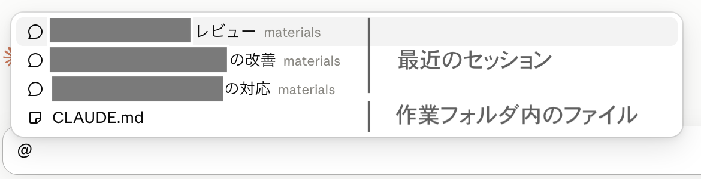
@議事録.md この会議の決定事項を3行でまとめて
- 対象を 明示的に読ませる。曖昧さが減ってコンテキストも節約できる
- 過去のセッションも選べるので、「前回まとめた内容を踏まえて」といった渡し方ができる
! — コマンド実行
入力欄の先頭で ! を打つと bash モード に切り替わる。入力した内容はプロンプトではなく コマンドとして実行 され、その出力が Claude に渡される。
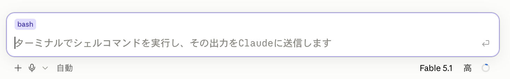
!ls
- 上の例は 作業フォルダの中身を一覧表示 する。Claude が作ったファイルができているか、その場で確認できる
- 環境によっては、フォルダをそのまま開くこともできる（macOS は
!open ./、Windows は!start .）
5-3. メッセージの操作（5分）
各メッセージの下にはアイコンが並んでいる。送信からの経過時間のほか、次の操作ができる。
| アイコン | できること |
|---|---|
| コピー | そのメッセージの内容をコピーする |
| ここまで巻き戻す | その時点まで会話を戻し、別の指示でやり直す |
| ここからフォーク | その時点から会話を枝分かれさせ、元のやりとりを残したまま別案を試す |
6実践：Web 記事をプレゼン資料にする（25分）
ここまでの内容を使って、実際に成果物を1本作ってみる。題材は「Web の記事を調べる → 日本語でまとめる → 資料にする → 配布用の PDF にする」という、ソフトウェア開発以外の業務でもそのまま使える流れ。コードは1行も書かない。
題材の記事（英語。自分で検索して見つけた別の記事でもよい）:
claude.com/blog/getting-started-with-loops
6-1. 準備 — 作業フォルダを用意して起動（3分）
- デスクトップなどに
article-reportという 空のフォルダ を作る（Finder / エクスプローラでよい） - Claude Code を起動し、そのフォルダを作業フォルダとして開く
- 初めて開くフォルダなので 「このフォルダを信頼するか」 の確認が出る → 自分で作ったフォルダなので信頼して進む（3-1 参照）
- 入力欄左下のモード表示から 「手動」 に切り替える（3-4）。承認ダイアログが何度か出てくるが、それ自体が体験の一部
6-2. Web 記事を日本語の資料にする（8分）
記事の URL を渡して、日本語の資料化を依頼する。
https://claude.com/blog/getting-started-with-loops の記事を読んで、内容を日本語でわかりやすくまとめた html形式でのプレゼン資料を loops-guide.html という1ファイルで作成してください。開発者でない人にも伝わる表現にしてください。
Web へのアクセスの前に、以下のような 承認ダイアログ が表示される。
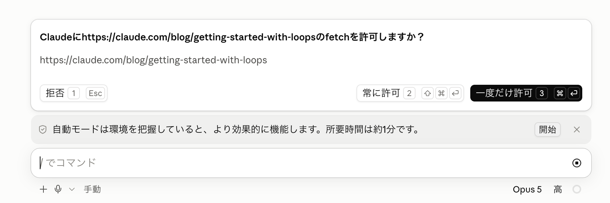
- 何に・何のために アクセスするかが表示される — 内容を確認してから
一度だけ許可で進む 常に許可を選ぶと、以後そのアクセスは確認なしになる（許可リストに追加される）- 心当たりのない宛先なら
拒否で断れる — これが 2章 で学んだ 承認モデル（ハーネス） の実物 - ファイルを新規作成するときにも、同じように承認を求められる
完成したらブラウザで開いて確認する。作業フォルダの loops-guide.html をダブルクリックすればよい。
- 記事が英語でも、日本語でと指示すれば日本語の資料 になる
- 依頼 → 調査 → 作成 → 確認 — 2章 で学んだエージェントループの一周を体験できた
6-3. デザインテンプレートを与えて見た目を更新する（8分）
好みのデザイン（社内のスライドテンプレート・気に入っている Web サイトなど）のスクリーンショットを撮る。撮った画像は 入力欄に貼り付ける（コピー＆ペースト） だけで渡せる。パソコンに保存した画像なら、ドラッグ＆ドロップ でも渡せる。
画像を添えて、デザインの更新を依頼する:
渡した画像のデザイン（配色・フォント・レイアウトの雰囲気）に合わせて、loops-guide.html の見た目を更新してください。文章の内容は変えないでください。
- 仕上がりが気に入らなければ「余白をもう少し広く」「見出しの色を控えめに」のように 会話で微調整 する
6-4. PDF 化して配布できるようにする（6分）
資料を配布・印刷しやすいよう、仕上げに PDF へ変換する:
loops-guide.html を A4 縦の PDF に変換して、loops-guide.pdf として保存してください。
- Claude が PC にインストール済みのツール（Chrome のヘッドレス印刷など）を探して変換してくれる。使えるツールが無い場合は、代替手順（ブラウザで開いて「印刷 → PDF に保存」）を案内してくれる
- 出来上がったら作業フォルダの
loops-guide.pdfを開いて確認する - 「見出しの途中で改ページしないようにして」「余白を広めに」のような 印刷向けの微調整も会話で 頼める
同じ流れを、自分の業務に近い題材でもう一度やってみましょう。最近読んだ Web 記事、社内で共有された参考サイトなど、何でも構いません。
<記事の URL> を読んで、社内共有用に日本語のプレゼン資料（html 1ファイル）を作ってください。最後に A4 縦の PDF にも変換してください。
✓まとめ（4分）
第1回の振り返り
| 章 | 学んだこと |
|---|---|
| 2 | Claude Code は エージェント型 — コンテキスト収集 → ツール実行 → 検証のループを自走する。基本用語（モデル / コンテキスト / トークン / ハーネス / セッション） |
| 3 | インストールと作業フォルダを開く手順、サイドバーからのセッションの開始・再開、画面の見方と設定（使用量・モデル・エフォート）、5つの承認モード |
| 4 | 設定ファイルの階層 — CLAUDE.md（Claude への指示・/init で生成）と settings.json（ハーネスの動作設定） |
| 5 | 3種類の操作と特殊プレフィックス — @（ファイル・過去セッションの参照）・!（コマンド実行）、メッセージの巻き戻しとフォーク |
| 6 | 資料作成の型 — 調査 → 日本語の資料化 → デザイン調整 → PDF 化。コードを1行も書かずに成果物ができる |
💬質疑応答（15分）
ここまでの内容についての質問・疑問に答える。日常業務での適用イメージ（どの作業から Claude Code に任せるか）もここで相談する。